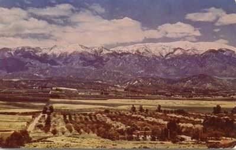
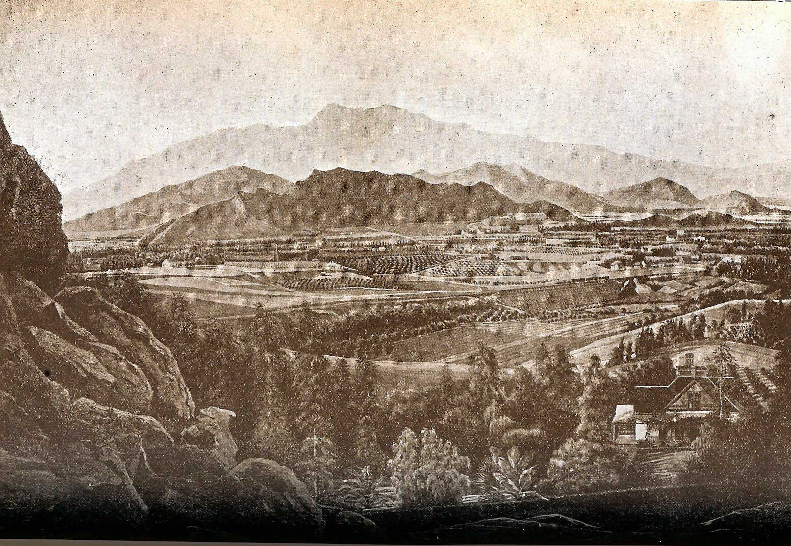

The Mormon Battalion had traveled through southern California and returned to Salt Lake City with glowing tales of California. Although Brigham Young had not originally planned on planting a settlement in California, he came to realize that having a wagon route to the Pacific would be essential for securing supplies for the Saints in Utah. A Pacific waystation would also be beneficial for the converts from Australia or the Pacific Islands on their way to Salt Lake City to equip themselves for the difficult journey through the desert. A southern location would avoid seasonal limitations from mountain snows. With this in mind, Brigham Young reluctantly sanctioned the establishment of a new colony, and appointed Aposles Amasa M. Lyman and Charles C. Rich to lead it.
The pioneering company of 150 wagons that gathered in Payson on the 24th of March, 1851 was far larger than the “twenty persons or so” Brigham Young expected, and his disappointment seemed to sour him on the colony from then on out. Nevertheless, the colony was planted and by all accounts thrived until Brigham Young’s disputes with the federal government in 1856 over his leadership of Utah Territory devolved into the threat of war. The crisis was magnified by the Mountain Meadows Massacre on September 11, 1856. Brigham Young soon called for the return of all Saints to Utah to defend Zion, withdrawing his support for the colony.

Links
Mojave Desert – Mormon Pioneers – The Lyman / Rich train traveled through the Mojave Desert on their way to San Bernardino. This site has links related to the journey and the Mormon history of the colony.
Mormon Colony in San Bernardino – This general site has bios of a few prominent early pioneers, and maps and links.
Historic Tour of San Bernardino – This site highlights historic buildings and sites of contemporary San Bernardino.
Suggested Reading
George William Beattie and Helen Pruitt Beattie, Heritage of the Valley, San Bernardino’s First Century, California Relations 29 (Oakland, CA: Biobooks, 1951).
Edward Leo Lyman, San Bernardino: The Rise and Fall of a California Community (Salt Lake City: Signature Books, 1996).
